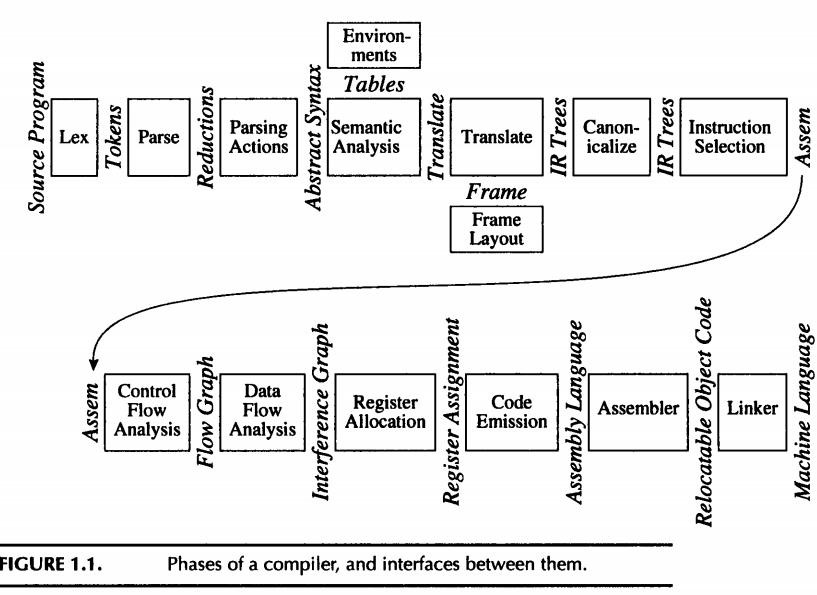
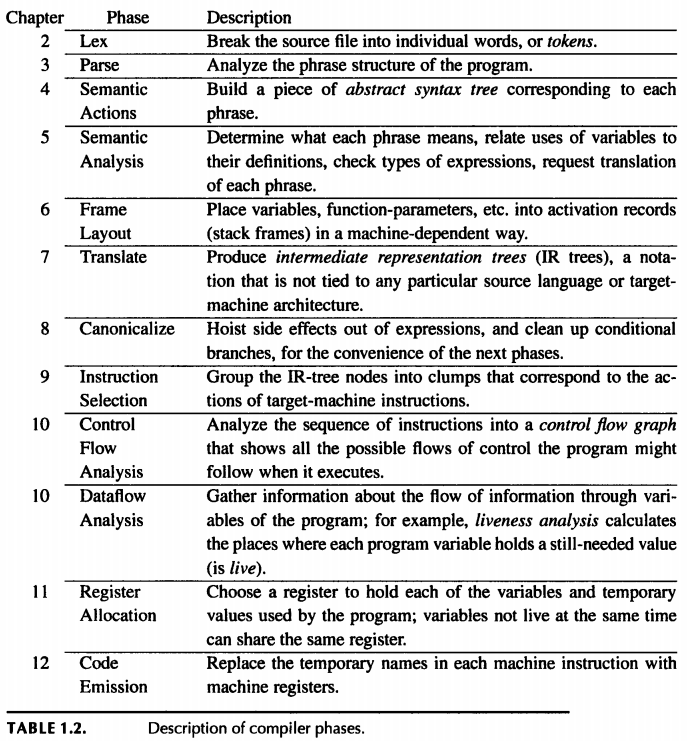
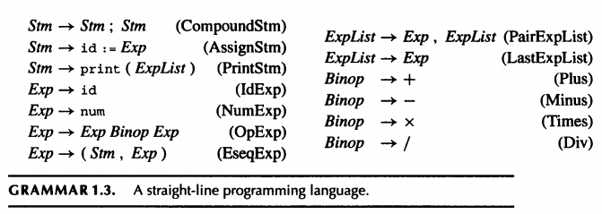

chapter 1: Introduction

1.1 Modules and Interfaces
1.2 Tools and Software
1.3 Data Structures for Tree Languages
 
each
Stm
is a statement
each
Exp
is an expression
s
1
;s
2
executes statement s
1
, then s
2
i:=e
evaluates the expression e, then store the result in variable i